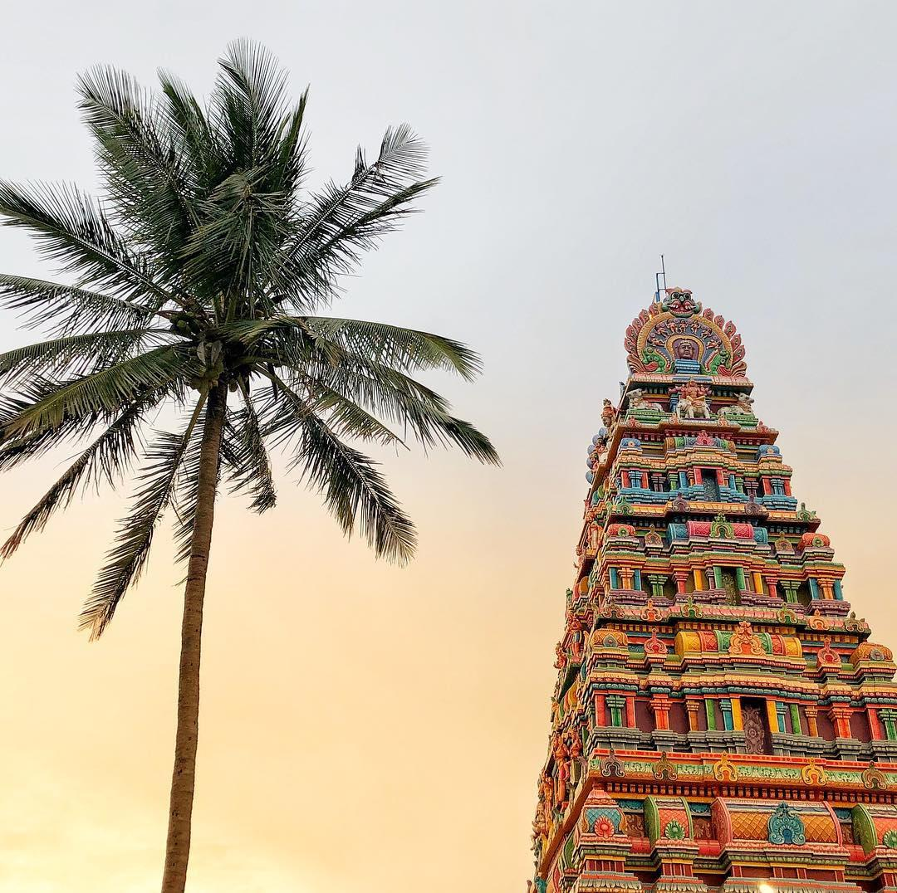

The Chandra Choodeswarar Temple is an ancient Shiva temple located on a rocky hill in the city of Hosur, Krishnagiri District, Tamil Nadu. Due to variations in the local languages (Tamil, Kannada, Telugu) and dialects, the temple is also referred to as 'Chandira Choodeshwarar', 'Chandra Choodeshwara', 'Chandra Choodeshwar', 'Shri Choodeswarar' or 'Arulmigu Chandra Choodeshwarar'. The main deities of the temple are Shiva, depicted as the Shiva linga and the Goddess Parvati, depicted as 'Maragathambal'.Temple history The exact history of the temple as to when it was consecrated is not clearly documented. Considering that the Hosur region is mentioned in ancient Hindu texts like the 'Bhadragiri Mahatmyam', a part of Brahmanda Purana, a shrine for Shiva is deemed to have existed here from ancient times. The temple has grown during the time of the Cholas, Hoysala and Vijayanagara Emperors. The Chandra Choodeshwara Temple structure may have been built by the Hoysala king, Thirupuvanamalla Barvatharaja Anthiyazhvar, in the year 1260. The 13th-century inscription found during Chandra Choodeshwara temple patronage. Perumal Temple in Hosur and Bangalore Shiva Temple inscriptions tell the details of donations to Chandra Choodeshwara temple. There are also inscriptions of Rajendra Chola in this ancient temple. The temple was renovated by Azhakiya Perumal Aathimoolam.
